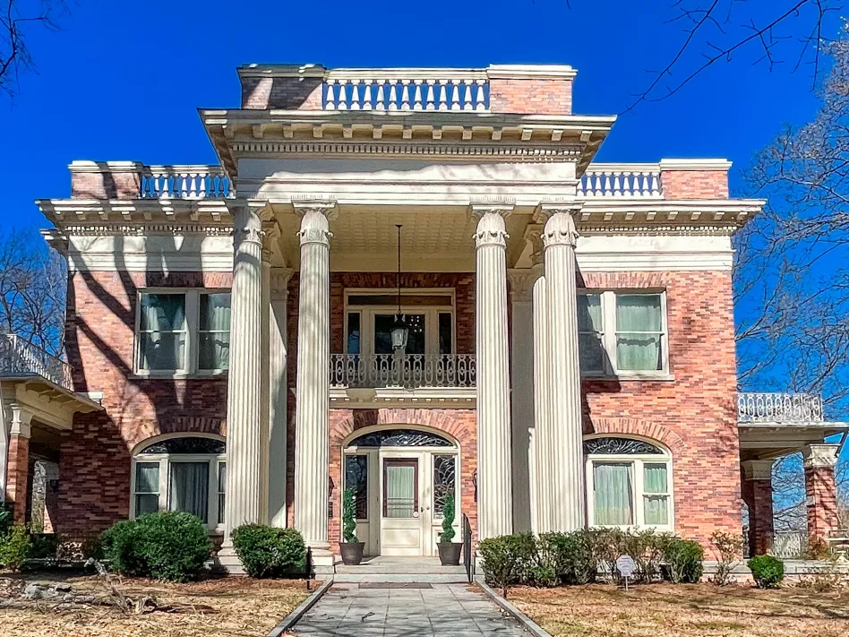

History of the Home
A National Historic Landmark built between 1908 and 1910.
Designed by Adrienne, Built by Community
The Herndon Home was designed by Adrienne McNeil Herndon, with Alonzo Franklin Herndon acting as general contractor. Construction — except for plumbing and electrical systems — was performed exclusively by African-American craftsmen.
A sterling example of upper-income dwellings in the early 1900s, the home's interior draws upon various design traditions, including Renaissance Revival forms in the reception hall and dining room, and Rococo detailing in the music room.
Designated a National Historic Landmark in 2000, the Herndon Home stands as a lasting tribute to the hard work and talent of the Herndon family and the community that built it.

Key Dates
Construction of the Herndon Home on University Place in Atlanta's Westside.
The Herndon family moves into their new residence.
Norris B. Herndon establishes The Herndon Foundation to preserve the family legacy.
The Herndon Home opens to the public as a museum.
Designated a National Historic Landmark by the U.S. Department of the Interior.
Under a new Board of Trustees, the museum undergoes preservation work and prepares to re-open.